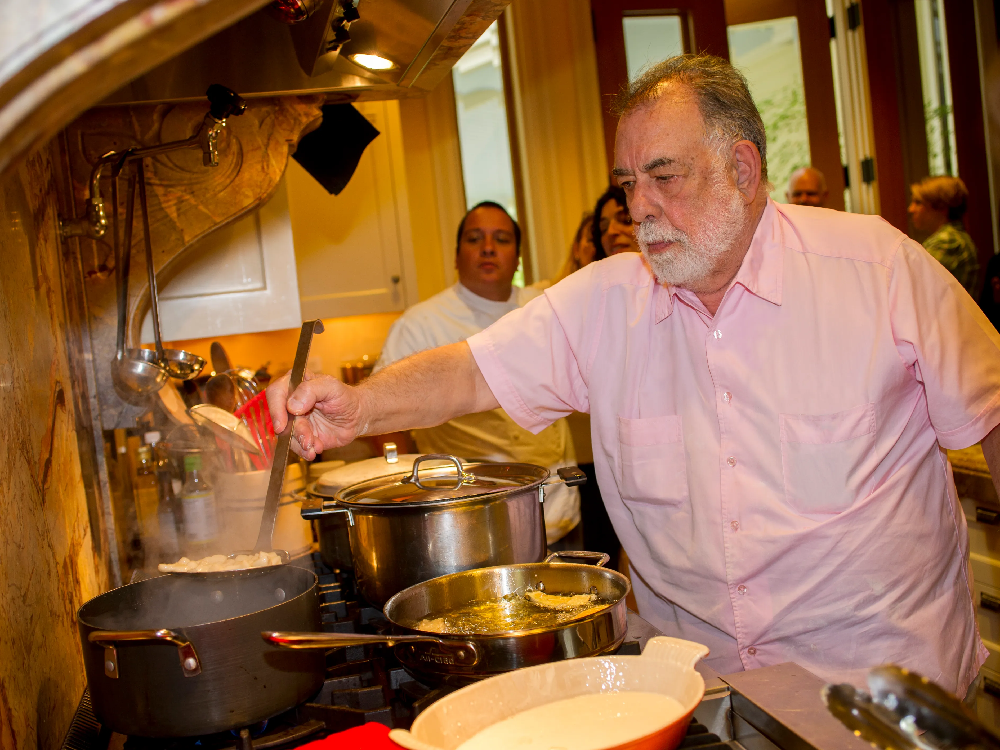

Francis Ford Coppola
This is his tomato sauce.

Ingredients
- 2 tablespoons olive oil
- 2 medium chopped onion
- 3 cans of tomatoes, crushed and drained
- 1 bunch of chopped fresh basil
- 1 pinch crushed red pepper flakes
- 1 tablespoon unsalted butter
- 2 pounds of spaghetti
Steps
- Heat oil in a pan on on medium heat. Saute onions in oil until transparent (about 5-7 minutes). Add tomatoes, 1/4 of the basil and pepper flakes.
- Simmer about 45 minutes. Add butter and remaining basil. If sauce is too thick, add some pasta cooking water.
- Serve over pasta.